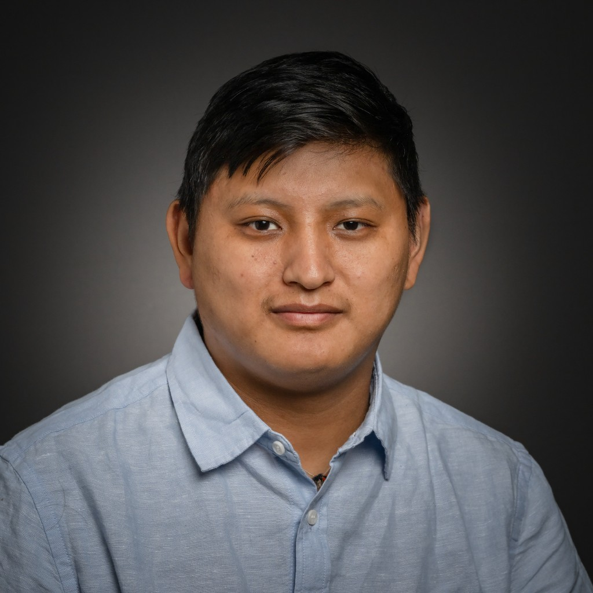
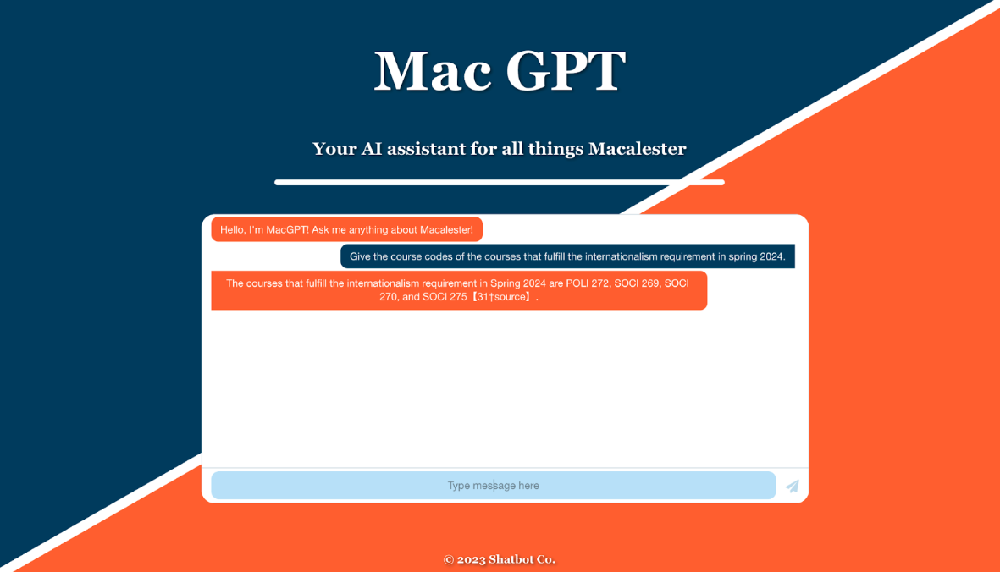
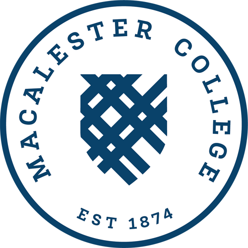
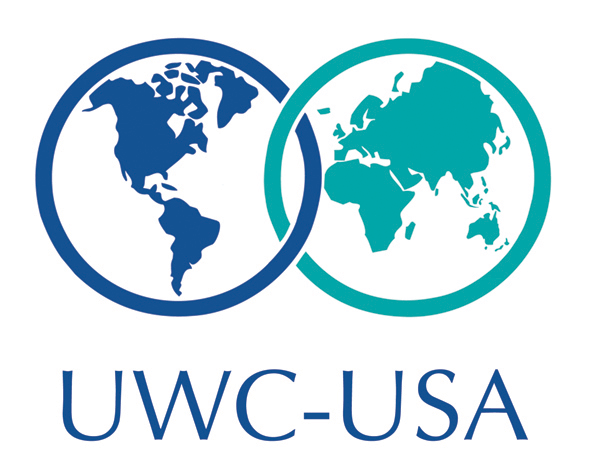

|
Tenzin Gyaltsen I'm an SM student in MIT's Technology and Policy Program, focusing on AI safety, auditing, and policy research at the intersection of technology and governance. Previously, I earned a BA in Computer Science & Political Science from Macalester College, where I was a CS preceptor and co-built Mac-GPT, a fine-tuned campus assistant. I've interned at Uber and Sparrow Charts, building scalable backend systems used by hundreds of millions of users. I was born and raised in a Tibetan refugee camp in Northern India and educated at Tibetan Children's Village schools. A childhood fascination with gadgets I could not afford led me to teach myself by repairing a 1990s Fujitsu laptop, and eventually advising friends, family, and schools on technology. I'm drawn to technology, politics, and building innovative products for underserved communities. |
 |
{kind=link}
ResearchI'm interested in AI safety, model auditing, governance, and policy mechanisms that make advanced AI systems more trustworthy and accountable. My work sits at the intersection of computer science, political science, and public-interest technology. |
|
 |
Mac-GPT: A Fine-Tuned Campus Assistant for Macalester College
Tenzin Gyaltsen, Aalyan Arif Mahmood, Haris Ahmed, Salman Ijaz Course project & Minnebar presentation, 2023 code / talk Fine-tuned a large language model on Macalester-specific data so students, faculty, and staff can ask natural-language questions about campus life, academics, and resources. |
|
MySQL Spotify Database Emulator
Tenzin Gyaltsen Database systems project code Designed and implemented a relational schema and queries modeling Spotify's music catalog, users, playlists, and listening history using MySQL. |
|
|
Tetris Puzzle: iOS Game
Tenzin Gyaltsen, Lily Ewing, Sheida Rashidi Ardestani, Mobile app (Swift / UIKit), 2023 code / project page Built an iOS puzzle game inspired by Tetris and tangrams with custom levels, animations, and touch controls under Professor Paul Cantrell's guidance. |
Professional Experience |
|
Software Engineering Intern, Uber Technologies
San Francisco, California · May 2023 – August 2023 Redesigned an end-to-end Java backend service decoupled from the team's core endpoint; created gRPC endpoints, Kafka topics, and Terrablob storage while optimizing core computation algorithms. Applied test-driven development for full test coverage and led incremental shadow rollouts. Improved data consistency by 90%, cut service costs by 50%, and scaled computations from 150M to 1B. |
|
|
Software Engineering Intern, Sparrow Charts
Minneapolis, Minnesota · May 2022 – July 2022 Developed 10+ features for Sparrow's core product used by 1,000+ marketing users; integrated a Google Docs add-on and partnered with senior engineers on end-to-end testing and QA. Automated customer data integration into GSuite, reducing integration time by 98%. |
Education |
|
|
SM, Technology and Policy Program
Massachusetts Institute of Technology · 2025 – present Focusing on AI safety, audit, and policy research. Research and publications will be added here as they develop. |
|
 |
BA, Computer Science & Political Science
Macalester College, Saint Paul, Minnesota · 2020 – 2024
Honors: Dean's List (Fall 2021, Spring 2022, Spring 2023, Fall 2023), MacNest Internship Grant, Davis Scholar, Kofi Annan Scholar.
|
|
 |
IB Diploma
United World College – USA, Montezuma, New Mexico · 2018 – 2020
Honors: Horizon Foundation UWC Scholar.
|
|
Languages: Tibetan, English, Hindi
Programming: Java, Python, C++, SQL, Swift, JavaScript, HTML/CSS, R Frameworks & tools: React, Spring MVC, Git, CI/CD, REST, gRPC, Kafka, AWS, Maven, Grafana Libraries: PyTorch, Scikit-Learn, Pandas, NumPy, Matplotlib, UIKit, SpriteKit, Log4j, Mockito |
|
Website template from Jon Barron. |